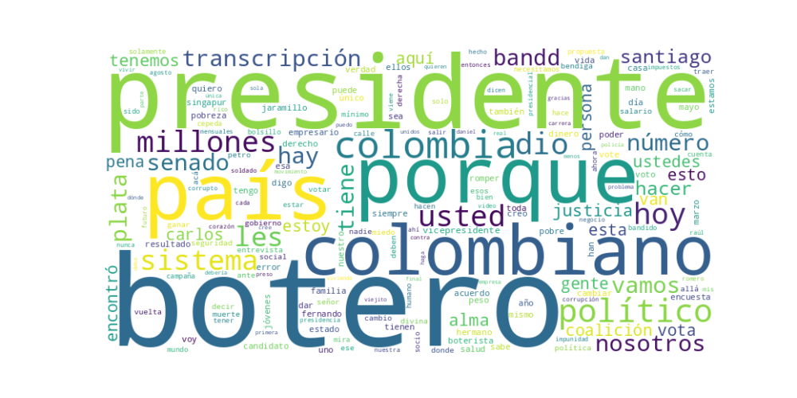

Seguidores: 231,953
Reporte de Análisis de Comunicación Política: Santiago Botero Jaramillo
1. Perfil de Comunicación: El estilo de comunicación del candidato Santiago Botero es predominantemente informal, directo y confrontacional. Emplea un lenguaje coloquial y popular, con frecuentes apelaciones emotivas y un tono de cercanía que busca romper con el formalismo político tradicional. Su comunicación es visceral, utiliza un registro cercano al habla cotidiana y recurre a expresiones fuertes, incluso soeces en ocasiones, para impactar y generar identificación con un electorado frustrado. El discurso se apoya fuertemente en un marco religioso (“justicia divina”, “Dios me mandó”) y en la autopresentación como un outsider (“no político”) que habla “sin asco”.
2. Temas Principales: 1. Lucha contra la Corrupción y el Establecimiento (“El Sistema”): Es el eje central de su discurso. Aborda el tema con un lenguaje bélico, prometiendo “romper el sistema”, acabar con la “impunidad” y aplicar “justicia divina”. Ejemplo: “Los band!d0$ disfrazados de políticos y empresarios van a pagar por todos los negocios que han hecho”. 2. Seguridad y Justicia (“Mano Dura”): Propone medidas extremas contra la criminalidad, incluyendo la pena de muerte para corruptos y la adopción de un modelo de seguridad inspirado en Bukele. Ejemplo: “Contra los band!d0$ lo que hay que hacer es AJUSTICIARLOS” y “Los derechos humanos deben proteger a los más débiles, pero acá lo que hacen es proteger a los band!d0$”. 3. Economía Popular y Lucha contra la Pobreza: Critica a la “clase política” por manejar la riqueza mientras hay “27 millones de pobres”. Promete “platica para los colombianos” y mejoras salariales, posicionándose como un gerente que administrará Colombia como una empresa para sus “accionistas” (los ciudadanos). Ejemplo: “Cada colombiano debe tener derecho a recibir 40 millones de pesos mensuales”. 4. Crítica al Sistema de Salud: Denuncia el sistema como corrupto e ineficiente, culpando a políticos y EPS. Ejemplo: “Las eps no reciben un peso mío hasta que no arreglemos este berenjenal”. 5. Apelación a los Jóvenes y el Cambio Generacional: Se presenta como la alternativa para una nueva generación hastiada, prometiendo viajes y oportunidades. Ejemplo: “Necesitamos jóvenes valientes, dispuestos a romper el sistema, los que no nos arrodillamos”.
3. Tono y Sentimiento Dominante: El tono es abrumadoramente crítico, confrontacional y mesiánico. Es profundamente pesimista respecto al estado actual del país, al que describe como un “berenjenal” controlado por “bandidos”. Sin embargo, este pesimismo se combina con una promesa radical de cambio y un optimismo condicionado a su llegada al poder, presentándose como el único salvador posible. Hay una fuerte carga de indignación moral y una promesa de venganza/castigo contra la clase política.
4. Palabras Clave de Poder: * Romper el Sistema / RomperElSistema⚒️: Su eslogan y hashtag principal. Define su propuesta de ruptura total. * Band!d0$: Término recurrente para descalificar a políticos, empresarios y criminales, fusionando las categorías. * Justicia Divina: Su principal promesa y fuente de legitimidad, enmarcando su misión como un mandato religioso. * 27 millones de pobres: Cifra emblemática que usa para cuantificar el fracaso del sistema y justificar su cruzada. * Platica para los colombianos: Promesa económica concreta y de lenguaje popular. * Botero Presidente: Afirmación constante y enfática de su destino y victoria. * El que la haga, la paga: Amenaza directa para después del 7 de agosto, estableciendo una línea divisoria. * No político / Outsider: Se define en oposición absoluta a la clase política tradicional.
5. Conclusión Estratégica: La estrategia de comunicación de Santiago Botero está diseñada para capitalizar el antipoliticismo y la indignación popular. Se dirige a un electorado joven, urbano y frustrado con el establishment, ofreciendo una narrativa simple y poderosa: el país está secuestrado por una élite corrupta (“bandidos”) y solo un agente externo, con mandato divino y dispuesto a usar métodos extremos, puede liberarlo. Su discurso mezcla promesas económicas populistas con un programa de seguridad autoritario, todo envuelto en un lenguaje religioso y de redención nacional. Busca evocar esperanza a través de la ira, posicionándose como el instrumento de un castigo justiciero y la única vía para un futuro radicalmente diferente. La comunicación es emocional, performativa y busca constantemente la polarización y la viralización en redes sociales.
1. Resumen del Patrón de Éxito: La fórmula de éxito se basa en una combinación de confrontación moralista y cercanía mesiánica. El discurso se estructura como una cruzada contra un sistema corrupto ("los bandidos"), utilizando un lenguaje directo, coloquial y cargado de simbolismo religioso. No busca debatir con datos, sino movilizar mediante una promesa de justicia divina y un contundente "ya basta", posicionando al candidato como el instrumento elegido para una transformación purificadora.
2. Tácticas de Comunicación Clave: * Apelación a un Enemigo Claro y Confrontación Moral: Define constantemente un "ellos" versus "nosotros". "Los bandidos", "políticos mañosos" y "empresarios" son el enemigo abstracto responsable de todos los males, especialmente la impunidad. El eslogan "el que la haga la paga" es una táctica poderosa de confrontación que promete un cambio radical de reglas. * Narrativa Mesiánica y Providencial: El candidato se enmarca no como un político tradicional, sino como un instrumento de una misión divina. Se mencionan "justicia divina", el "número de Dios", y se afirma que "Dios me mandó al mundo a transformar este país". Esto trasciende la política y la convierte en un destino moral y espiritual, generando un vínculo emocional intenso con seguidores. * Cercanía y Comunidad ("Boteristas"): Fomenta una identidad de grupo fuerte y excluyente. Usa términos como "Boteristas", "Templarios", anuncia eventos en la "CASA BOTERISTA" y muestra apoyo a figuras de su movimiento (como el candidato al Senado). Esto construye una tribu leal que se siente parte de una causa, no solo de una campaña. * Contraste Esperanza/Miedo en una Píldora Simple: La esperanza ("acabaremos con la impunidad", "transformar nuestro país") solo es posible mediante la erradicación del miedo y la corrupción encarnada por el "enemigo". El mensaje es binario: o el sistema corrupto continúa, o llega la justicia con nosotros.
3. Temas de Mayor Resonancia: * Lucha contra la Impunidad y la Corrupción: Es el tema central y transversal. Se presenta como la raíz de todos los problemas de Colombia. * Honor y Reconocimiento a las Fuerzas Armadas: El video apoyando la propuesta de vivienda para familias de soldados genera una conexión emocional fuerte con un sector clave, mostrando un "corazón" detrás del discurso duro. * Desprecio por el Establecimiento Político: Atacar a "políticos mañosos" y ofrecer una "ley de punto final" antes de una nueva era de cero tolerancia resuena con el hastío hacia la clase política tradicional. * Legitimación contra las Encuestas: Abordar directamente su baja intención de voto y convertirla en una narrativa de lucha heroica ("una causa, no un resultado") moviliza a la base y desafía el relato mediático.
4. Perfil de la Audiencia Implícita: Le habla primordialmente a su base leal y movilizada, y a un sector del electorado desencantado, anti-sistema y que valora un liderazgo fuerte y moralista. El uso de lenguaje de redes sociales (emojis de herramientas ⚒️, términos como "pilas", "guachafita"), referencias al gaming (Call of Duty) y el tono de "conversación entre iniciados" apunta a una audiencia más joven o familiarizada con estas dinámicas digitales, pero el núcleo del mensaje (justicia, orden, moral) busca un espectro más amplio de frustración ciudadana.
5. Conclusión Estratégica: La clave fundamental es la conversión del discurso político en un discurso de misión moral y casi religiosa. Su poder no reside en propuestas técnicas, sino en una narrativa épica simple: un hombre común llamado por Dios para liberar al pueblo de los corruptos. Lo que lo hace potente y diferente es que no pide un voto, sino una fe. Ofrece identidad ("Boterista"), pertenencia a una comunidad de creyentes y la promesa catártica de una justicia final y divina. En un entorno de desconfianza institucional, esta comunicación se presenta no como más política, sino como su antídoto espiritual.

Caption: Hoy más que nunca estoy firme!! realizaré mi inscripción ante la Registraduría Nacional, seré el PRIMER CANDIDATO OFICIALMENTE INSCRITO para las elecciones presidenciales de 2026. Los bandidos nos quieren arrodillados y yo no les tengo miedo… Dios derramará justicia sobre este país y acabaremos con la impunidad ⚒️🙏🏼💥 #RomperElSistema⚒️ #SantiagoBoteroJaramillo
Likes: 13,177 | Comentarios: 82 | Reproducciones: 30,636
Ver en InstagramCaption: Este 7 y 8 de marzo es el campeonato de Call Of Duty, pendientes que a todos les va a llegar la información 🫡 y pilas con el que se ponga de hacker o band!d0!! @carlosfernando.cuevas @callofdutylatam #RomperElSistema⚒️ #SantiagoBoteroJaramillo
Likes: 7,719 | Comentarios: 92 | Reproducciones: 63,663
Ver en InstagramCaption: Así apoyamos este 8 de marzo a nuestro CANDIDATO AL SENADO @yonatanboteroalzate ⚒️🙏🏼 @carlosfernando.cuevas #RomperElSistema⚒️ #SantiagoBoteroJaramillo
Likes: 2,440 | Comentarios: 96 | Reproducciones: 29,441
Ver en Instagram